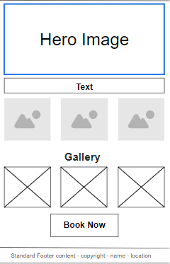
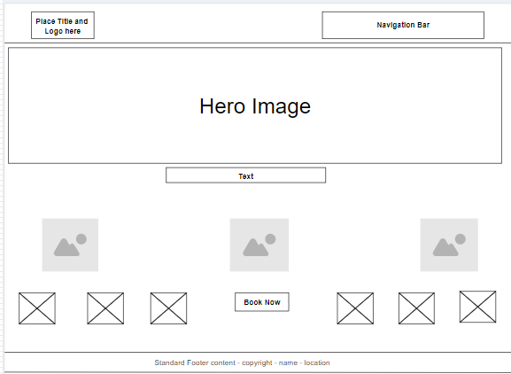

Site Plan: Glam Goddess by Chocó
Site Name & Branding
Site Name: Glam Goddess by Chocó
Description: Glam Goddess by Chocó is a beauty and nail art brand offering makeup artistry, press-on nails, and nail tech services. The brand name reflects a luxurious, feminine, and fun approach to beauty.

Site Purpose
This website helps you discover and book professional makeup and nail services, browse a gallery of creative looks, and learn more about the artist behind Glam Goddess by Chocó. The site is designed to make it easy for you to explore services, view pricing, and schedule your next beauty appointment.
Scenarios
- Which makeup and nail services are available, and what are the prices?
- Where can you see examples of previous makeup and nail art?
- How do you book an appointment for a makeup session or nail service?
- Who is the artist behind Glam Goddess by Chocó?
Color Schema
-
Primary: #e75480 (Pink) – Used for headings, buttons, and accents.
-
Secondary: #f8b7cd (Light Pink) – Used for backgrounds, cards, and highlights.
-
Accent: #fff8f0 (Off-white) – Used for the main page background.
Typography
- Montserrat – Used for headings and navigation for a modern, clean, and feminine feel.
- Open Sans – Used for body text for easy reading and a professional look.
Wireframes
Mobile View:

Desktop View:
